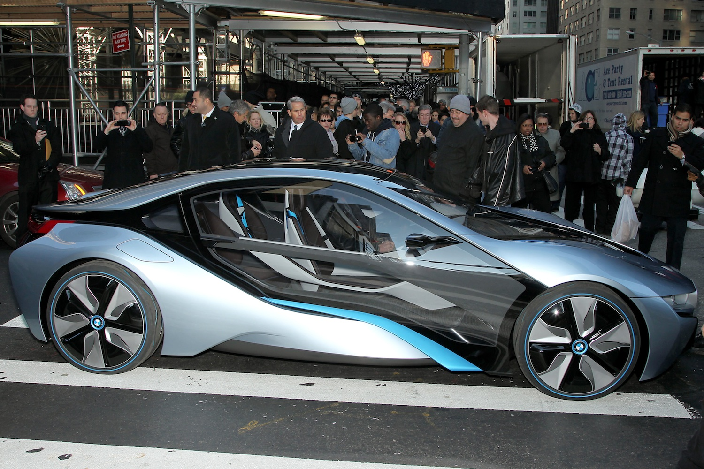

BMW was established as a business entity following a restructuring of the Rapp Motorenwerke aircraft manufacturing firm in 1917. After the end of World War I in 1918, BMW was forced to cease aircraft-engine production by the terms of the Versailles Armistice Treaty. The company consequently shifted to motorcycle production in 1923, once the restrictions of the treaty started to be lifted, followed by automobiles in 1928–29.
The first car which BMW successfully produced and the car which launched BMW on the road to automobile production was the Dixi, it was based on the Austin 7 and licensed from the Austin Motor Company in Birmingham, England.
BMW's first significant aircraft engine was the BMW IIIa inline-six liquid-cooled engine of 1918, much preferred for its high-altitude performance. With German rearmament in the 1930s, the company again began producing aircraft engines for the Luftwaffe. Among its successful World War II engine designs were the BMW 132 and BMW 801 air-cooled radial engines, and the pioneering BMW 003 axial-flow turbojet, which powered the tiny, 1944–1945–era jet-powered "emergency fighter", the Heinkel He 162 Spatz. The BMW 003 jet engine was tested in the A-1b version of the world's first jet fighter, the Messerschmitt Me 262, but BMW engines failed on takeoff, a major setback for the Emergency Fighter Program until successful testing with Junkers engines. Towards the end of the Third Reich BMW developed some military aircraft projects for the Luftwaffe, the BMW Strahlbomber, the BMW Schnellbomber and the BMW Strahljäger, but none of them were built.
By the year 1959, the automotive division of BMW was in financial difficulties and a shareholders meeting was held to decide whether to go into liquidation or find a way of carrying on. It was decided to carry on and to try to cash in on the current economy car boom enjoyed so successfully by some of Germany's ex-aircraft manufacturers such as Messerschmitt and Heinkel. The rights to manufacture the Italian Iso Isetta were bought; the tiny cars themselves were to be powered by a modified form of BMW's own motorcycle engine. This was moderately successful and helped the company get back on its feet. The controlling majority shareholder of the BMW Aktiengesellschaft since 1959 is the Quandt family, which owns about 46% of the stock. The rest is in public float.